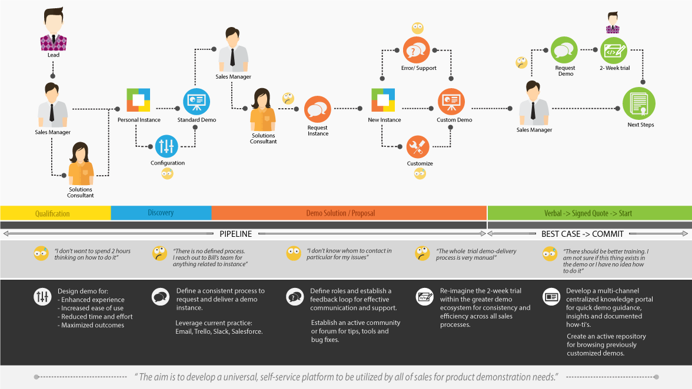
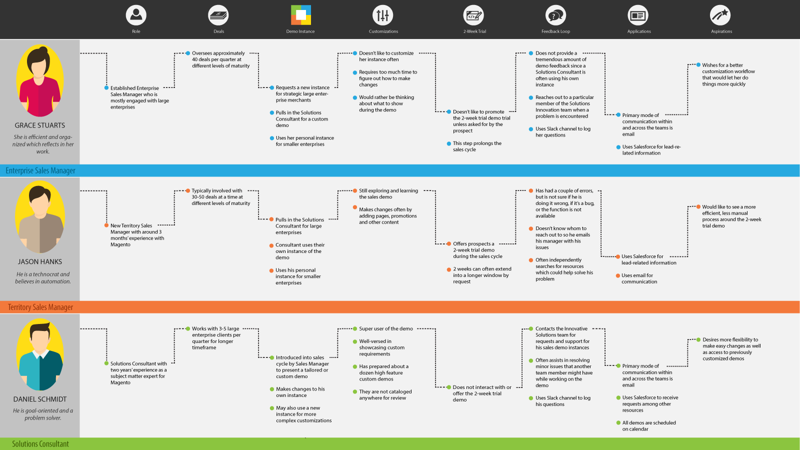
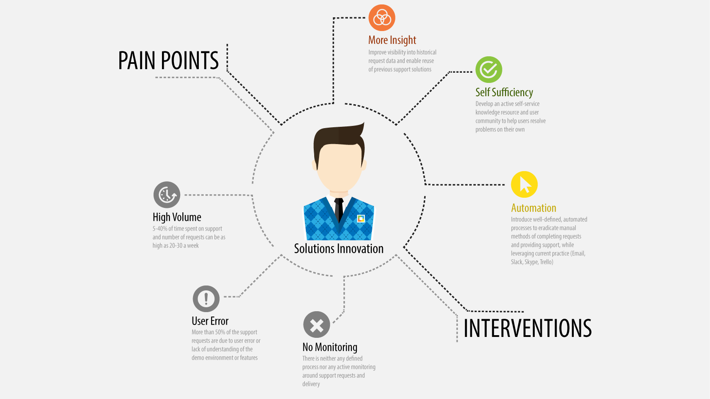
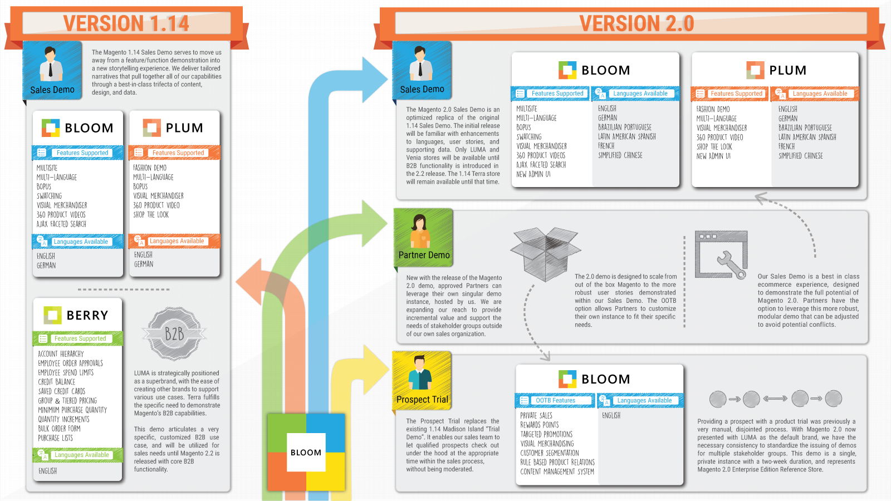

I interned at Ebay Enterprise over the Summer of 2015. I work revolved around designing the knowlegde portal/platform for the internal teams to request and seek support for the different flavors of the demo instances. I followed the design philosophy of "Customer Driven Innovation" used across ebay products. My work included understanding the sales process specifically the demo ecosystem by conducting stakeholder interviews across different teams, analysing them and designing a web based portal based on the prevalent sales process. I also designing an infographic to be used a knowledge tool for understanding various flavors and features of sales demo.
In 1886, Coca-Cola history began when the curiosity of an Atlanta pharmacist, Dr. John S.Pemberton, created a distinctive tasting soft drink that could be sold at soda fountains. The Coca-Cola Company was incorporated on September 5, 1919 as a beverage company. The Company owns or licenses and markets more than 500 nonalcoholic beverage brands, primarily sparkling beverages but also a variety of still beverages.



Hypothetical customer journey was drafted to see major customer touch points with the brand. Also, three perosnas were drafted based on a general user-segment of the brand.
Coca-Cola innovates on three pillars:
~ Refreshing the world
~ Inspiring moments of happiness
~
Making a difference
These innovations were categorised and put into mattrices to draw insights.
